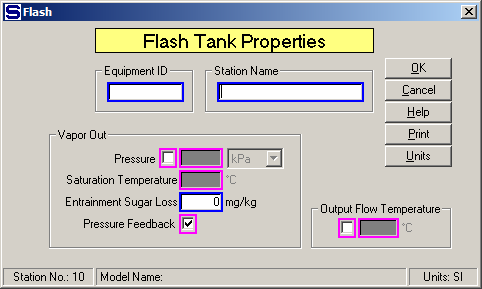

Equipment ID An equipment ID of up to 11 characters can be used to identify the station with an actual station in the process. Any combination of numbers and letters that are used in the factory/refinery to identify equipment can be entered. For example, Equipment ID = 123.456A. It is not necessary to make an entry in the Equipment ID field if the station in the model does not have a corresponding station in the factory/refinery.
Station Name A name of up to 20 characters must be entered for the station. For example, Station Name = 3rd Cond. Flash Tank.
Flashing will occur if the temperature of the output flow is less than the input flow. If a Vapor Out Pressure (or Saturation Temperature) is entered, Sugars will calculate the temperature of the output flow with consideration given to the boiling point elevation, if any. Sugars will give an error message if this calculation results in an output flow temperature that is greater than the input flow temperature, or if the entered value for the Output Flow Temperature is greater than the temperature of the flow into the flash tank. Hence, entering a value for the Output Flow Temperature, or a Vapor Out Saturation Temperature, will result in water vapor flashing if the input flow temperature is either greater than the output flow temperature, or greater than the vapor out temperature plus boiling point elevation. Sugars will give an error message if the pressure of the flow into the flash tank is less than the pressure of the vapor out. No heating occurs, or is considered, in a flash tank station.
Vapor Out An entry can be made for either the Vapor Out Pressure (or Saturation Temperature), Pressure Feedback, or for the Output Flow Temperature. The borders of these entry fields are in magenta color to indicate that only one of them can be selected. If Pressure Feedback is selected, the vapor flow out will be a pressure feedback flow and the pressure of both the vapor and process flows out will be at the feedback pressure. The feedback pressure will be at atmospheric pressure if the vapor flow leaves the model.
Pressure Left click the check box next to the Pressure field to select the Vapor Out Pressure and Saturation Temperature instead of the Output Flow Temperature. Vapor Out Saturation Temperature may be entered instead of Pressure when the check box next to the Pressure field is selected. The drop-down box next to the Pressure field can be used to select the pressure units for entry. The Saturation Temperature will be calculated and displayed by Sugars when an entry is made for the Pressure. For example, Pressure = 0.5 bar gives 81.3°C. If "mm Hg" or "in Hg" units are used for the Pressure, the entered value should be < 0.0 if the pressure is below standard atmospheric pressure.
Saturation Temperature Enter the saturation temperature of the vapor flow out of the flash tank. Sugars will calculate a value for the pressure of the vapor leaving the flash tank when the cursor is indexed to another field. For example, Saturation Temperature = 85.00 °C gives 57.9 kPa.
Entrainment Sugar Loss Enter entrained sugar loss to vapor out as parts-per-million (PPM) of sugar in vapor excluding any non-condensable gases in the vapor flow (e.g., CO2, NH3, etc.). Sugar loss is measured by the parts-per-million of sugar in the condensed vapor. Also, this parameter allows for entrainment of sucrose and non-sucrose material in the vapor flow. The input parameter is for the sugar loss; however, Sugars will consider the droplets entrained with the vapor to have the same %DS and Purity as the syrup (or, mother liquor if the flow contains crystals) leaving the flash tank. Because Sugars considers the entrained droplets to have both sucrose and non-sucrose, the Sugar Loss parameter will give a non-sucrose loss if the input flow purity is less than 100%. For example, Entrainment Sugar Loss = 80 ppm.
Pressure Feedback Left click the check box to use pressure feedback to define the pressure of the vapor leaving the flash tank. For example, if the vapor out goes to a receiver, the output pressure of the receiver will be fed back to the flash tank as the vapor out pressure. The output pressure of a receiver will be the minimum pressure of all the flows into the receiver that are not pressure feedback flows. If the vapor flow out goes out of the model and pressure feedback is used, the atmospheric pressure for the model (see Program Overview > User Interface) will be used as the feedback pressure.
Output Flow Temperature Left click the check box next to the Output Flow Temperature field to select the process flow out temperature instead of Vapor Out Pressure or Pressure Feedback. Only one of these three options can be selected. For example, Output Flow Temperature = 103.5°C.